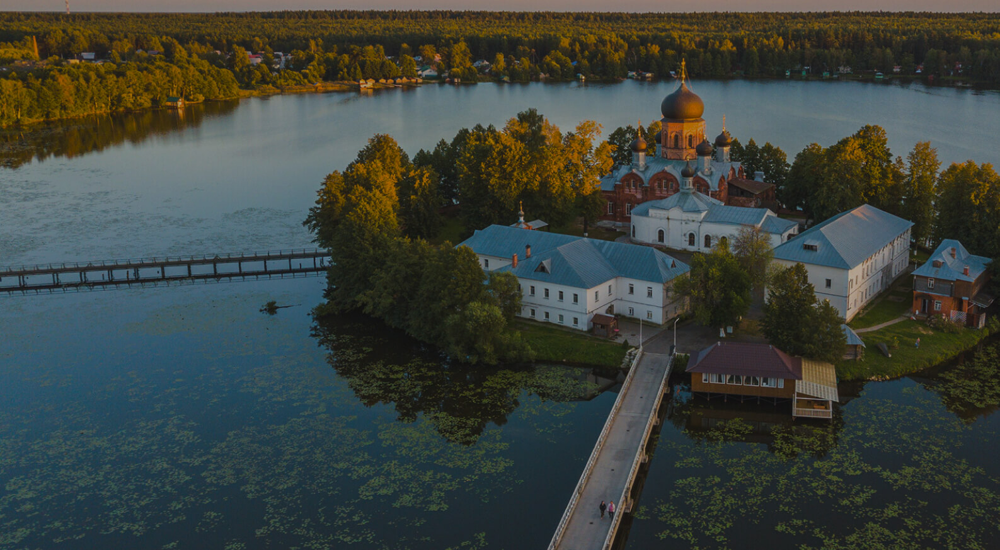

Муром
День семьи, любви и верности
В России День семьи, любви и верности официально празднуют 8 июля. Праздничные события проходят в каждом городе, каждой семье. Но самый большой праздник, конечно же, проводится на родине святых Петра и Февронии - на Муромской земле. Семья – это одна из главных ценностей человечества. Символом праздника стал цветок — ромашка.
Мы Вам советуем посетить